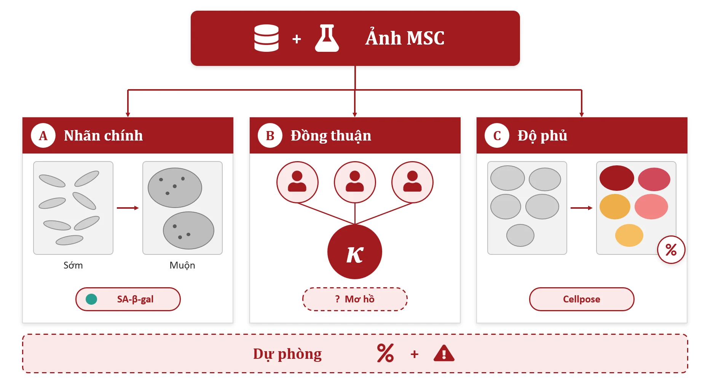
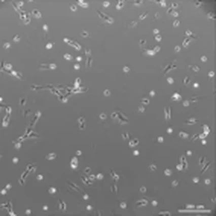
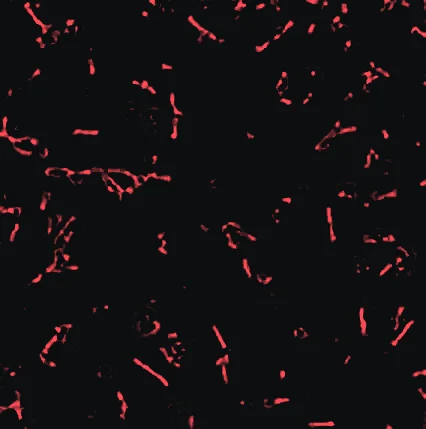
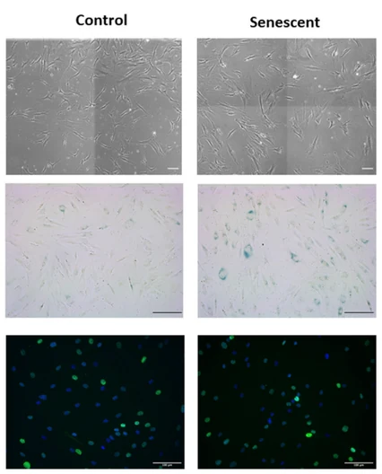
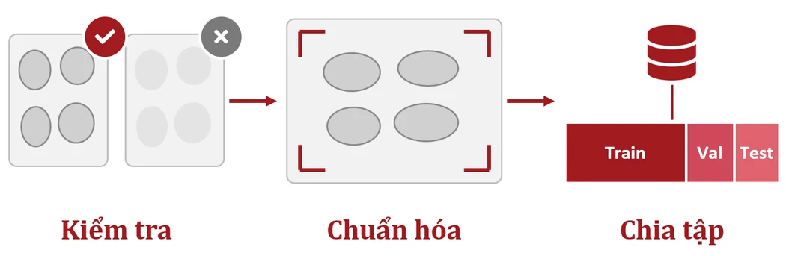
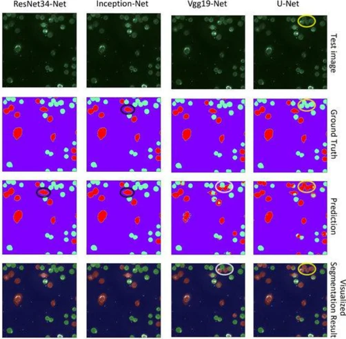

A
Nhãn chính
Thông tin passage (sớm/muộn) hoặc xác nhận SA-β-gal. Passage là chỉ dấu nhanh, SA-β-gal dùng để xác nhận.
AI đánh giá độ phủ và lão hóa tế bào gốc trung mô từ ảnh kính hiển vi
Không cần nhuộm, chạy trên ảnh kính hiển vi phổ thông, tự nhận biết ca khó để chuyển cho chuyên gia. Kết quả nhanh, nhất quán và đáng tin cậy.
Tế bào gốc trung mô (MSC) có tiềm năng lớn trong y học tái tạo, nhưng đánh giá chất lượng nuôi cấy vẫn dựa nhiều vào quan sát bằng mắt. Vision-MSC phân tích ảnh kính hiển vi trường sáng và tương phản pha để ước tính độ phủ tế bào, đánh giá hình thái liên quan đến lão hóa và phát hiện bất thường, kết hợp học máy, học sâu và hiệu chỉnh độ tin cậy để hỗ trợ chuyên gia kiểm soát chất lượng nuôi cấy MSC.
Kỹ thuật viên ước lượng độ phủ và nhận biết tế bào lão hóa (to, dẹt, nhiều hạt) theo kinh nghiệm cá nhân.
Kết quả phụ thuộc người đánh giá, sai lệch giữa các lô và giữa các phòng lab.
Hệ thống chụp và phân tích tự động của hãng thiết bị đắt, gắn với phần cứng riêng, ít lab trong nước có.
Xây dựng công cụ AI phân tích ảnh MSC để đánh giá độ phủ tế bào, mức độ lão hóa và phát hiện bất thường, cung cấp kết quả đáng tin cậy, dễ ứng dụng thực tế. Không xâm lấn, tương thích kính hiển vi phổ thông tại Việt Nam.
Ảnh phase-contrast/brightfield MSC công khai và ảnh từ phòng thí nghiệm Việt Nam. Mỗi nguồn bắt buộc kiểm tra: giấy phép, dòng tế bào, độ phóng đại, nhãn gốc từ đâu.
Thông tin passage (sớm/muộn) hoặc xác nhận SA-β-gal. Passage là chỉ dấu nhanh, SA-β-gal dùng để xác nhận.
2–3 chuyên gia gán nhãn độc lập trên tập con ngẫu nhiên, đo bằng Cohen’s κ / Fleiss’ κ. Ca mơ hồ giữ lại phân tích riêng.
Tỷ lệ bao phủ từ phân đoạn Cellpose làm tham chiếu, kiểm tra thủ công trên một tập con.
Huấn luyện trên các nguồn còn lại, kiểm tra trên một nguồn mô hình chưa từng thấy, lần lượt từng nguồn. Cách đánh giá này phản ánh đúng hiệu năng khi đưa công cụ sang một phòng lab mới.
Lượt 1/5



Ảnh gốcPhân đoạnChọn từng passage để xem tế bào dày lên qua các lần cấy chuyển. Kéo thanh trên ảnh để đặt ảnh gốc cạnh kết quả phân đoạn, thứ mô hình dùng để tính độ phủ.
Tỷ lệ điểm ảnh thuộc đường viền phân đoạn, đo trên 4 ô của Hình 3: mật độ tế bào tăng rõ qua từng passage.
Thu thập ảnh MSC và xây dựng nhãn tham chiếu, phân biệt nhóm đối chứng với nhóm có dấu hiệu lão hóa.

Kiểm tra chất lượng, chuẩn hóa ảnh và chia tập.
Chống rò rỉ dữ liệu: chia theo thí nghiệm / đĩa nuôi cấy / nguồn dữ liệu, group k-fold, nhiều seed, báo cáo trung bình ± SD.

Hai đầu ra: điểm lão hóa dạng hồi quy/ordinal (thay vì 3 lớp cứng) và ước lượng độ phủ.
So sánh với baseline đặc trưng hình thái để chọn mô hình hiệu quả nhất.
độ phức tạp tăng dần →
So sánh hiệu năng và kiểm tra khả năng tổng quát hóa bằng leave-one-dataset-out (§2).

Grad-CAM kèm sanity check (so với khi randomize trọng số) để bảo đảm vùng mô hình chú ý thật sự nằm trên tế bào. Phân tích có hệ thống các ca sai. Ablation: bỏ augmentation, bỏ xử lý mất cân bằng, đổi độ phân giải.
Minh họa nguyên lý sanity check.
Công cụ gọn, mã nguồn mở, chạy với ảnh kính hiển vi thông thường, hỗ trợ kiểm soát chất lượng nuôi cấy MSC. Không cần thiết bị đắt.
Vision-MSC không chỉ đưa ra dự đoán mà còn cho biết mức độ chắc chắn. Xác suất được hiệu chỉnh để phản ánh đúng thực tế, và ảnh có độ tin cậy thấp tự động được chuyển cho chuyên gia.
Cột đỏ thấp hơn đường chéo = mô hình tự tin quá mức. ECE hiện tại: —
tự trả lời, đúngtự trả lời, saichuyển chuyên gia
Số liệu trong mục này được mô phỏng trên 400 ảnh để minh họa cơ chế.
Vision-MSC tập trung vào những gì một công cụ kiểm soát chất lượng thật sự cần:
Leave-one-dataset-out: kiểm tra trên nguồn dữ liệu mô hình chưa từng thấy.
Hiệu chỉnh xác suất, từ chối khi ảnh ngoài phân phối hoặc độ tin cậy thấp.
Ảnh thật từ ít nhất một lab trong nước; ngưỡng cảnh báo do chuyên gia xác nhận.
Mã nguồn mở, ảnh kính hiển vi thông thường, kèm demo web.
Trong đánh giá độ phủ tế bào và mức độ lão hóa MSC.
Nhờ hiệu chỉnh xác suất và cơ chế từ chối dự đoán.
Tự động hóa phân tích hình ảnh, giảm phụ thuộc vào chuyên gia.
Vision-MSC đề xuất giải pháp mới trong tự động hóa đánh giá chất lượng tế bào gốc trung mô nhờ tích hợp các mô hình AI cùng kỹ thuật hiệu chỉnh độ tin cậy. Bằng khả năng xác định độ phủ và nhận diện sớm các bất thường hình thái từ ảnh hiển vi, công cụ cung cấp kết quả khách quan, góp phần chuẩn hóa quy trình kiểm soát chất lượng, tối ưu thời gian và giảm rủi ro vận hành trong nghiên cứu lẫn sản xuất liệu pháp tế bào.